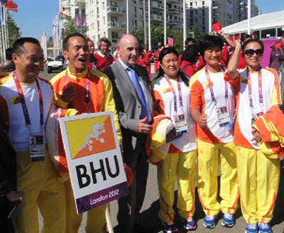

Bhutan formed its first Olympic committee in November 1983 with the mission to “Establish a representative, organized sports system that delivers sports and recreation for all.” The formation of this committee, the Bhutan Olympic Committee (BOC), enabled Bhutan to participate in the 1984 Summer Games held in Los Angeles, California. Bhutan has participated in every Summer Game held thereafter, bringing their participation up to 8 Olympic games total, including the 2012 Summer Games. Bhutan has never participated in the Winter Games.
The only sport Bhutan has participated in up until the 2008 Olympics is Archery. This is due to Archery being the national sport of the country. During the 2012 Olympics Bhutan was represented in the women’s 10m air-rifle event.1 In 2010-2011 Bhutan researched and created a “Strategic Vision and Road Map” to develop other organized sports in the country.2 This is meant to increase Bhutan’s Gross National Happiness, and, presumably increase their standings in future Olympic endeavors.
Since its participation in 1984 Olympic games to the most recent, Bhutan has not medalled in any events. In the 2012 Olympics both participants representing Bhutan were wild card entries, which means they did not meet the qualifications of the sport but the Olympic Committee allowed Bhutan to participate in the Olympics despite this. The Bhutan Archery competitor, Sherab Zam ranked 61 out of 64.3 The Shooting competitor, Kunzang Choden, ranked 56 out of 56.
2012 Rankings
- Archery: 61 out of 64
- Shooting: 56 out of 56

Bhutan at the 2012 Olympics
1 Goldsmith, Belinda. August 5, 2012. "Olympics-Bhutan is happy to be one of smallest nations at Games." Reuters. Retrieved September 2012.
2 2012. "About." Bhutan Olympic Committee. Retrieved September 2012.
3 August 2, 2012. "Olympics: Sherab Zam loses game, wins hearts." Kuensel Online. Retrieved September 2012.
Click here to learn more.